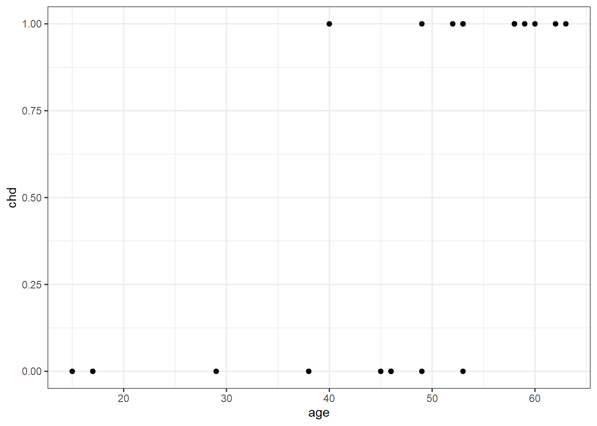
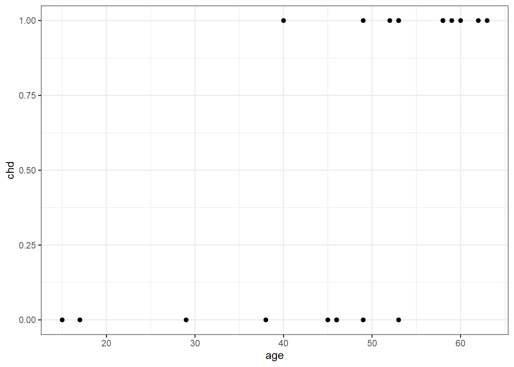
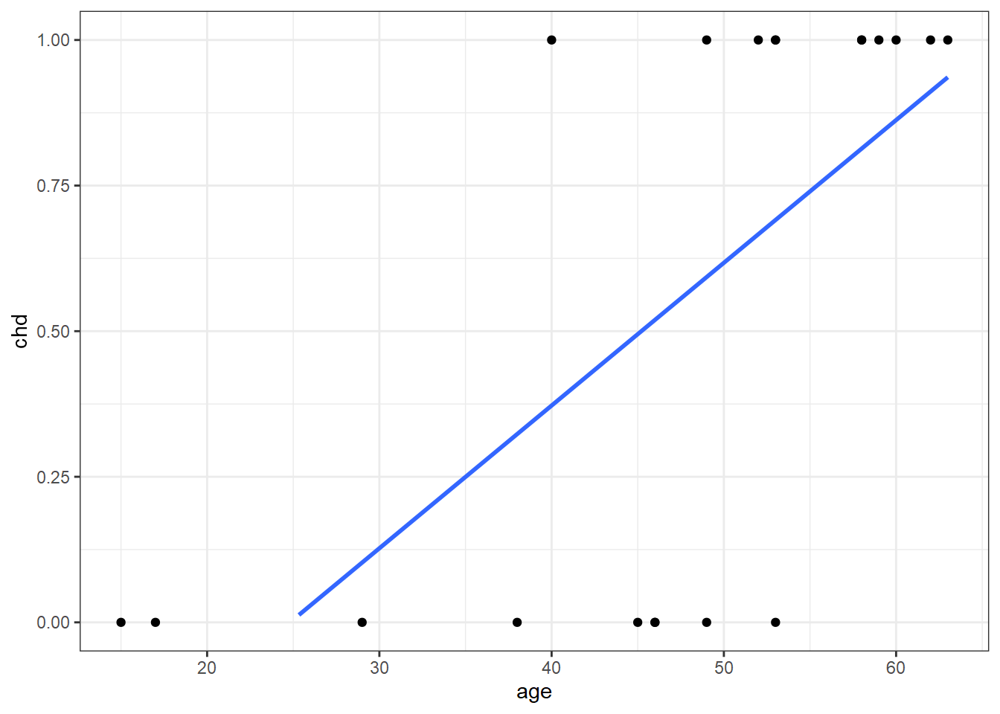
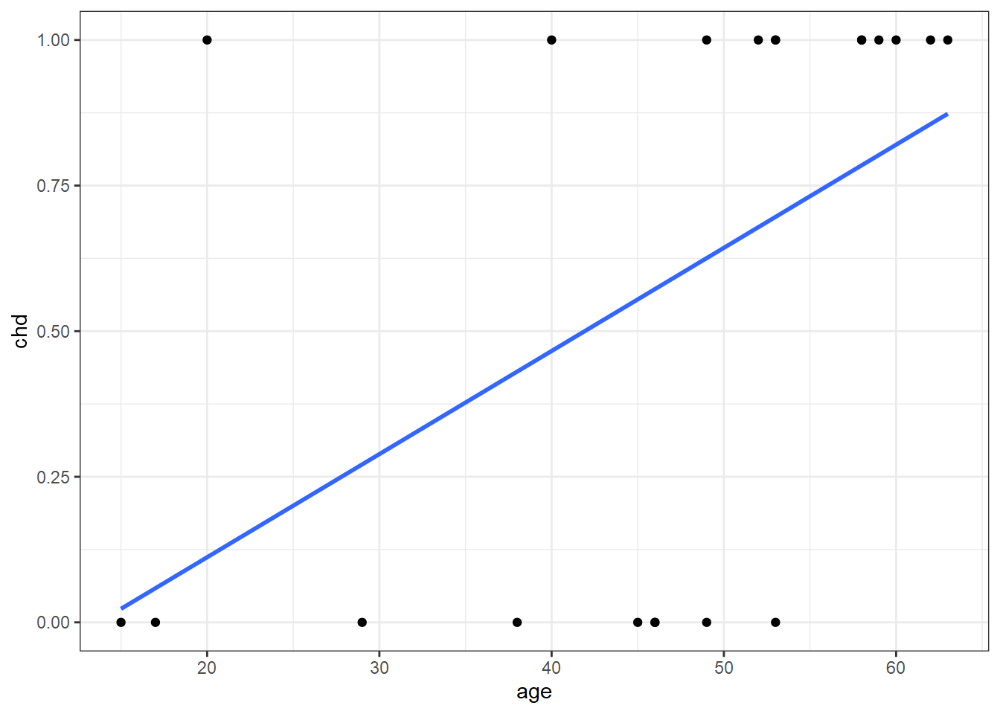
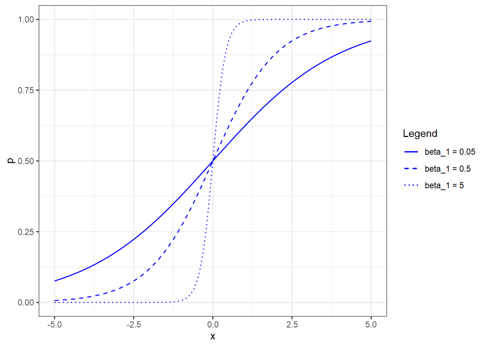
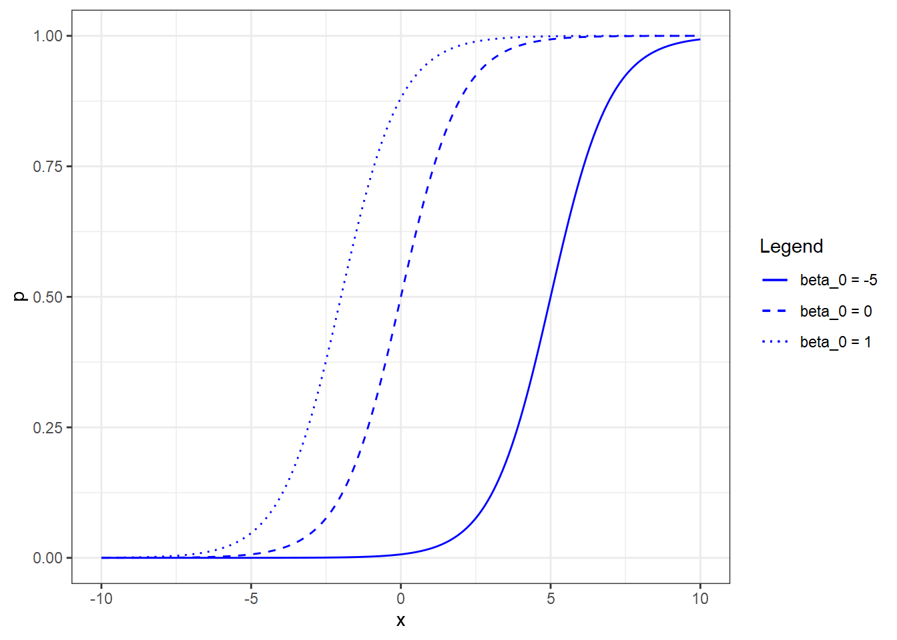
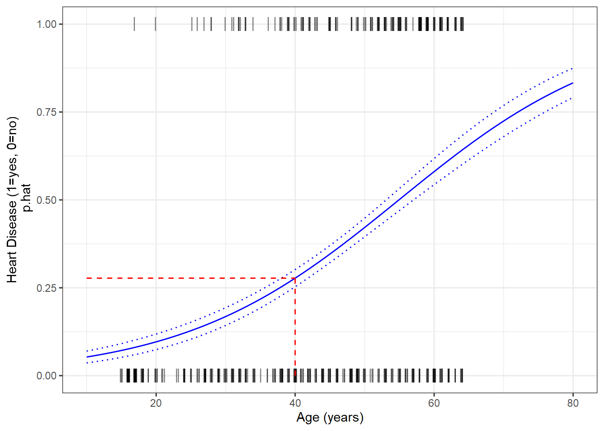
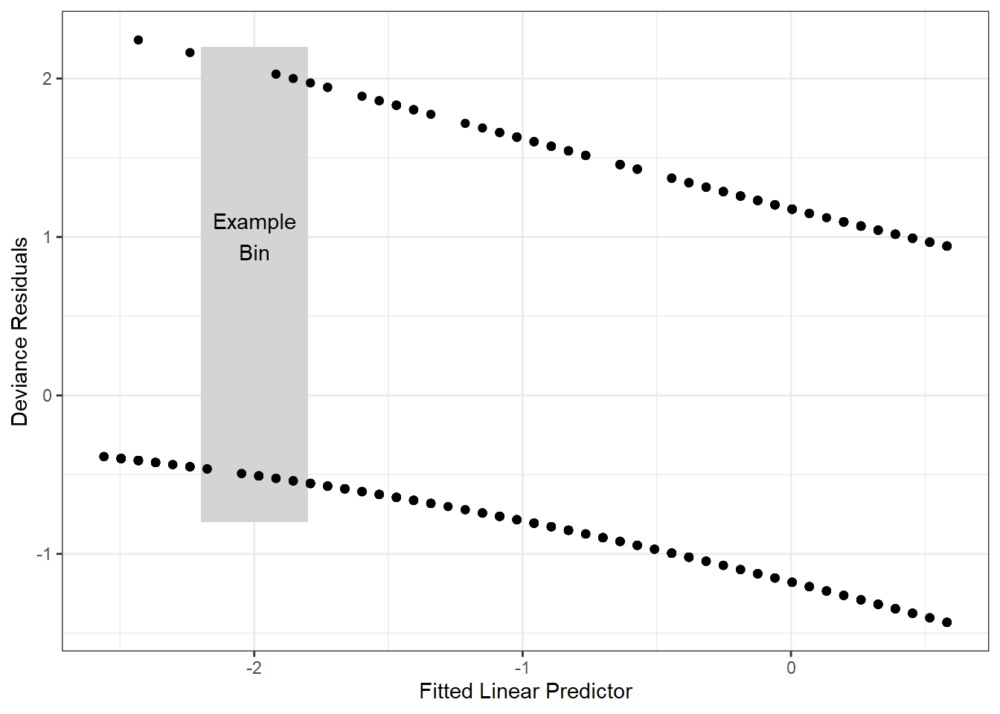
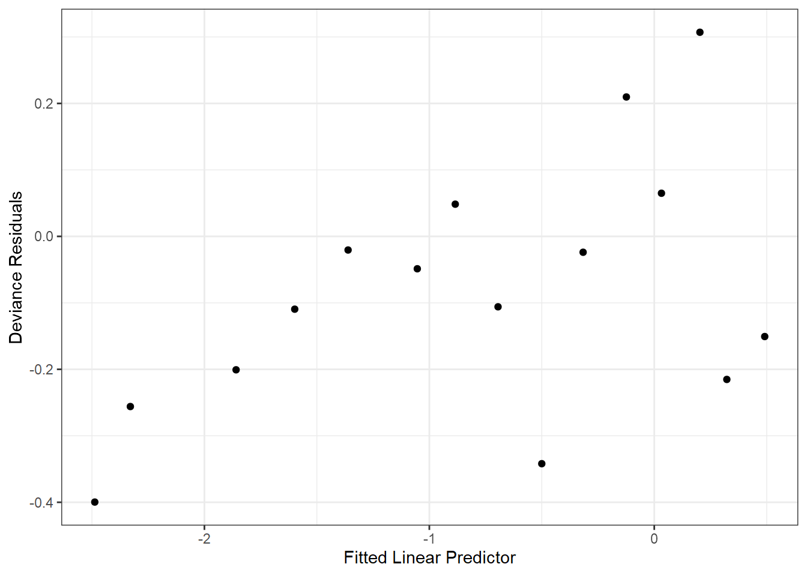

library(tidyverse)
SAheart = bestglm::SAheart
# look at the first 20 observations only and only age vs. chd
saheart = SAheart[1:21, c('age', 'chd')]
ggplot(saheart[1:20,], aes(x=age, y=chd)) +
geom_point() +
ylim(0, 1) +
theme_bw()
John King
May 26, 2020
So far, we’ve seen regression techniques for continuous and categorical response variables. There is a different form of regression called logistic regression for the case when the response is a binary variable.
The need for a different type of regression can be seen using an example. We’ll look at just one predictor (age) and the response (chd) in the SAheart dataset from the bestglm package. Here the response, chd is a binary variable indicating whether someone did (1) or did not (0) develop coronoary heart disease. For now, we’ll just look at the first 20 observations with a scatter plot.
library(tidyverse)
SAheart = bestglm::SAheart
# look at the first 20 observations only and only age vs. chd
saheart = SAheart[1:21, c('age', 'chd')]
ggplot(saheart[1:20,], aes(x=age, y=chd)) +
geom_point() +
ylim(0, 1) +
theme_bw()
There’s a clear trend here - younger typically didn’t have heart disease while older people did - but what exactly is the nature of the relationship? We can also think about this relationship in terms of probability. People under 20 have a virtually 0 probability of heart disease, and people over 60 have a near 1.0 probability of heart disease. But how do we connect those two extremes? If we assume there is a linear relationship, we’d get the following plot.
ggplot(saheart[1:20,], aes(x=age, y=chd)) +
geom_point() +
geom_smooth(formula = y ~ x, method=lm, se=FALSE) +
ylim(0, 1) +
theme_bw()
The 21st observation happens to be associated with a 20-year old who happened to have heart disease. If we include this new observation and re-fit the linear regression line, we get the following.
ggplot(saheart[1:21,], aes(x=age, y=chd)) +
geom_point() +
geom_smooth(formula = y ~ x, method=lm, se=FALSE) +
ylim(0, 1) +
theme_bw()
Adding the single observation didn’t give us any new information about the probability of heart disease for people in their 40s, 50, and 60s, but considerably changed the fit. Additionally, if we were to extend the regression line to the right to predict the probability of heart disease of an 80-year old, we’d get a probability > 1. For these reasons, linear regression doesn’t model the relationship well, so we need to find something better.
An alternative to linear regression is to use a logit function, \(\eta\) to replace \(y\) in the linear regression equation.
\[\eta = \beta_{0}+\beta_{1}x_{1}+...+\beta_{i}x_{i}+\varepsilon\]
where,
\[\eta = log\left\lgroup{\frac{p}{1-p}}\right\rgroup\]
and where \(p\) is the probability of heart disease. In this form \(\eta\) can also be thought of in terms of \(log(odds)\). To enforce \(0\le p \le 1\), we further define \(p\) as:
\[p=\frac{e^{\eta}}{1+e^{\eta}}\]
With one predictor, as in our case, we can rewrite this to become:
\[p=\frac{e^{\beta_{0}+\beta_{1}x_{1}}}{1+e^{\beta_{0}+\beta_{1}x_{1}}}\]
If we now set \(\beta_{0}=0\) and allow \(\beta_{1}\) to vary, we can see the shape of the response for different coefficient values.

Note that if \(\beta_{1}=0\), that is the equivalent of saying that \(p\) is not a function of \(x\). The reverse (allowing \(\beta_{0}\) to vary while holding \(\beta_{1}=1\)), shifts the curve horizontally.

To fit a logistic regression model in R, use glm() instead of lm() and specify family=binomial.
Call:
glm(formula = chd ~ age, family = binomial, data = SAheart)
Deviance Residuals:
Min 1Q Median 3Q Max
-1.4321 -0.9215 -0.5392 1.0952 2.2433
Coefficients:
Estimate Std. Error z value Pr(>|z|)
(Intercept) -3.521710 0.416031 -8.465 < 2e-16 ***
age 0.064108 0.008532 7.513 5.76e-14 ***
---
Signif. codes: 0 '***' 0.001 '**' 0.01 '*' 0.05 '.' 0.1 ' ' 1
(Dispersion parameter for binomial family taken to be 1)
Null deviance: 596.11 on 461 degrees of freedom
Residual deviance: 525.56 on 460 degrees of freedom
AIC: 529.56
Number of Fisher Scoring iterations: 4From the summary, we see that \(\beta_{0} = -3.522\) and \(\beta_{1} = 0.064\), which gives us the equation for the estimated linear predictor:
\[\hat{\eta} = -3.522 + 0.064x\]
and the equation for the fitted probabilities.
\[\hat{p}=\frac{e^{-3.522 + 0.064x}}{1+e^{-3.522 + 0.064x}}\]
Given a 40-year old, we find \(\hat{\eta}=\) -0.962 and \(\hat{p}=\) 0.2764779. This highlights an important distinction when using predict() with a binomial response. To calculate \(\hat{\eta}\):
but to calculate \(\hat{p}\), we need to specify type = "response".
We can see that this is a much lower estimate of the probability of heart disease than was estimated by the linear model produced by lm(). Since \(\beta_{0}\) is negative, the regression curve will be shifted to the right of the mean age, and a low value for \(\beta_{1}\) will stretch out the “s” curve. A plot of \(\hat{p}\) versus age with the binomial regression curve and our estimated probability for a 40-year old is shown below.
ages = seq(10, 80, length.out = nrow(SAheart))
pred = tibble(
p = predict(sa.glm, newdata=tibble(age=ages), type="response"),
se = predict(sa.glm, newdata=tibble(age=ages), type="response", se=TRUE)$se, # standard error
age = ages
)
ggplot() +
geom_line(data = pred, aes(x=age, y=p), color='blue') +
geom_line(data = pred, aes(x=age, y=p+se), color='blue', linetype=3, size=0.5) +
geom_line(data = pred, aes(x=age, y=p-se), color='blue', linetype=3, size=0.5) +
geom_jitter(data = SAheart, aes(x=age, y=chd), shape=124, size = 4, width=0.2, height=0, alpha=0.5) +
geom_segment(aes(x=40, xend=40, y=0, yend=p.hat), color='red', linetype=2, size=0.5) +
geom_segment(aes(x=10, xend=40, y=p.hat, yend=p.hat), color='red', linetype=2, size=0.5) +
xlab("Age (years)") +
ylab("Heart Disease (1=yes, 0=no)\n p.hat") +
theme_bw()
Diagnostics for logistic regression follows the same philosophy as linear regression: we will check the model assumptions and look for outliers and high leverage observations. First, we’ll look for violations of the equal variance assumption, but instead of using the raw residuals as we did in linear regression, we need to look at the deviance residuals. For logistic regression, we have the following definitions:
As with linear model diagnostics, we can plot fitted values and deviance residuals; however, the plot is not particularly useful. Note that the upper row of points correspond to \(y_{i}=1\), and the lower row to \(y_{i}=0\). With a sufficiently large dataset, we can generate a more useful diagnostic plot by binning the observations based on their predicted value, and calculating the mean deviance residual for each bin.
df = tibble(
resid = residuals(sa.glm), # for raw residuals, specify residuals(sa.glm, type = "response")
preds = predict(sa.glm))
ggplot(df) +
geom_rect(aes(xmin=-2.2, xmax=-1.8, ymin=-0.8, ymax=2.2), fill='lightgray', alpha=0.5) +
geom_point(aes(x=preds, y=resid)) +
annotate("text", x=-2, y=1, label="Example\nBin") +
xlab("Fitted Linear Predictor") +
ylab("Deviance Residuals") +
theme_bw()
A general guideline is to create bins with at least 30 observations each, which for the SAheart dataset, means 462 %/% 30 = 15 bins. Now we have a much more useful diagnostic plot.
df = df %>%
arrange(preds) %>%
mutate(bin = c(rep(1:15, each=30), rep(15, nrow(SAheart)-15*30)))
df %>%
group_by(bin) %>%
summarize(
meanResid = mean(resid),
meanPred = mean(preds), .groups = 'drop') %>%
ggplot() +
geom_point(aes(x=meanPred, y=meanResid)) +
xlab("Fitted Linear Predictor") +
ylab("Deviance Residuals") +
theme_bw()
We identify unusual observations in logistic regression the same way as we did with linear regression but with slightly different definitions for residuals. We already covered raw residuals and deviance residuals. If we now represent the deviance residuals as \(r_{D}\), then we have the following additional definitions:
| Term | Definition | R Command |
|---|---|---|
| Standardized deviance residuals | \(r_{SD}=\frac{r_{D}}{\sqrt{1-h}}\) | rstandard(sa.glm) |
| Pearson residuals | \(r_{P}=\frac{y-\hat{p}}{\sqrt{\hat{p}(1-\hat{p})}}\) | residuals(sa.glm, type="pearson") |
| Pearson standardized residuals | \(r_{SP}=\frac{r_{P}}{\sqrt{1-h}}\) | none |
| Cook’s Distance | \(D=\frac{(r_{SP})^{2}}{q+1} \left({\frac{h}{1-h}} \right)\) | cooks.distance(sa.glm) |
Apply the same rules of thumb when identifying unusual observations as with linear regression.
Lastly, we can assess the goodness of fit for a model using several methods. A simple approximation akin to measuring \(R^2\) is:
\[R^{2}=\frac{D_{NULL}-D}{D_{NULL}}\]
where \(D_{NULL}\) is the null model devience (i.e., the total sum of squares) and \(D\) is the logistic regression model deviance. From the calculation below, we find that approximately 12% of the variance in chd is explained by age.
Faraway (2006) proposes a more sophisticated measure:
\[R^{2}=\frac{1 - exp\left\{ (D-D_{NULL})/N \right\}} {1 - exp\left\{-D_{NULL}/N \right\}}\]
where \(N\) is the number of binary trials.
[1] 0.195377Lastly, there’s the Hosmer-Lemeshow goodness of fit test where the null hypothesis is the the model fit is “good”, and the alternative hypothesis is the the model is saturated (i.e, not a good fit). For our example, we fail to reject the null hypothesis at the 95% confidence level. For a detailed treatment of the test, read this article.